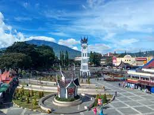

WebGIS Kota Bukittinggi

Kota Bukittinggi
Bukittinggi adalah sebuah kota di provinsi Sumatera Barat, Indonesia. Kota ini terletak di dataran tinggi sekitar 930 meter di atas permukaan laut, di antara Bukit Barisan yang terkenal dengan keindahan alamnya. Bukittinggi memiliki sejarah yang kaya sebagai salah satu pusat budaya dan sejarah Minangkabau. Beberapa tempat menarik di kota ini termasuk Jam Gadang, sebuah jam khas yang menjadi ikon kota, serta Taman Panorama Ngarai Sianok yang menawarkan pemandangan alam yang indah.
WebGIS Kota Bukittinggi
Saat ini, pemerintah kota Bukittinggi telah mengembangkan sistem informasi geografis web (WebGIS) untuk mempermudah akses informasi geografis tentang kota tersebut. WebGIS adalah sebuah platform berbasis web yang memungkinkan pengguna untuk mengakses, mencari, dan menganalisis data geografis secara interaktif melalui internet.
WebGIS kota Bukittinggi menyediakan berbagai informasi geografis, seperti peta administrasi, peta jalan, peta topografi, dan informasi lainnya yang relevan dengan wilayah kota. Melalui platform ini, pengguna dapat dengan mudah menemukan lokasi-lokasi penting, seperti fasilitas umum, objek wisata, dan infrastruktur kota lainnya.
Manfaat utama dari pengembangan WebGIS kota Bukittinggi adalah meningkatkan aksesibilitas informasi geografis bagi masyarakat, pengusaha, dan pihak-pihak terkait lainnya. Dengan menggunakan teknologi ini, pengambilan keputusan yang berkaitan dengan perencanaan kota, pembangunan infrastruktur, dan pengelolaan sumber daya dapat dilakukan dengan lebih efektif dan efisien. Selain itu, WebGIS juga dapat menjadi alat yang berguna dalam promosi pariwisata dan pengembangan ekonomi lokal.